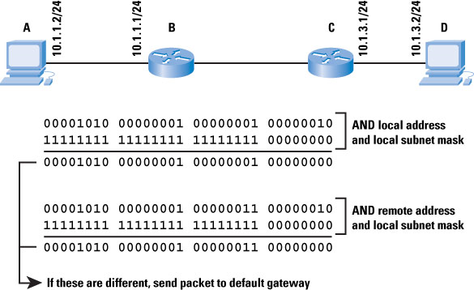
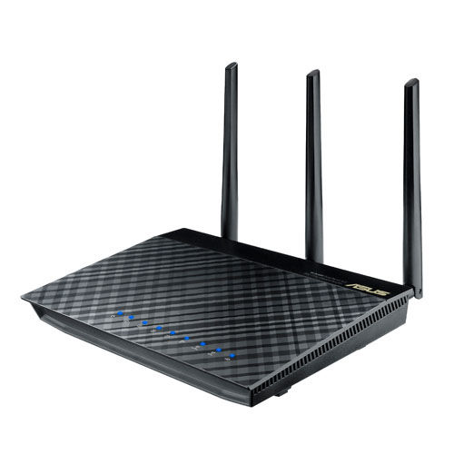
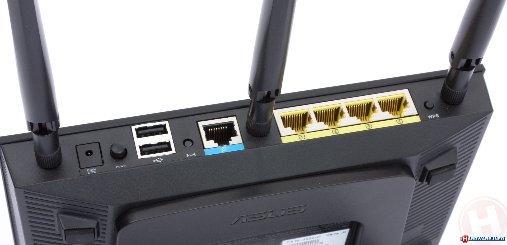

Topic
Pre: 什麼是網路
網路的實體介面
通訊規範與協定
路由器與交換器
交換器設定
Local Area Network (LAN)
Wide Area Network (WAN)
Transmission Control Protocol
TCP
對話開始與結束
分割資料與序列號確認
檢驗正確性
位於 OSI 第四層、TCP/IP 第三層
三向交握

IP
封裝資料
定址
「盡力而為」
位於 OSI 第三層、TCP/IP 第二層
封包與 header

子網路遮罩
還記得 LAN 與 WAN 嗎？
「盡力而為」
-
端對端傳輸
不保證封包完整性、正確性
不保證封包順序
不保證封包不會遺失
達到封包傳輸最高效率
Address Resolution Protocol
ARP
同一區域網路(LAN)中才使用
IP-MAC 轉換
廣播以尋找目標裝置
Media Access Control
每個裝置均有獨一無二的 MAC 位址
IP 是可變的，MAC 則否
只在同一區域網路中可見
當來源與目標位於同一子網路中， ARP 將介入處理
ARP 將 IP 轉換為 MAC ，再以 MAC 作為傳輸用的位址
當目標 IP 在 ARP 表中找不到時，裝置會發送廣播封包詢問
擁有目標 IP 的裝置將會回應
當來源與目標不在同一子網時，封包會向預設匣道傳送
預設匣道通常是路由器，可以在多個子網路中交換封包
猜猜看這是甚麼網站
74.125.23.101
173.252.120.6
2404:6800:4008:c02::64
2a03:2880:2130:cf05:face:b00c:0:1
為什麼要用網域名稱
還用我說嗎? :)
IP 很難記
可是路由器只吃 IP
沒有 IP 不能連線
DNS 怎麼運作
- DN 有階層, DNS 也有階層架構
- local name server
- authoritative name server
- root name server
A / AAAA
Domain name 轉換至 IP
A for IPv4
AAAA for IPv6
NS
指向下一個 Name Server
紀錄這個網域名稱的伺服器名稱
我把所有 bar.com 的 record 都放在 dns.bar.com 了!
CNAME
對應到另一個 A / CNAME 紀錄
foo.bar.com -> 去找 foo2.bar.com!
路由器 Router
連接多個子網路
將封包轉送至另一個子網路
建立路由表以求得最佳路徑
當網路中斷時，可改使用第二路徑
位於 OSI 第三層、TCP/IP 第二層
無線分享器
家用等級路由器，功能少、效能差
交換器 Switch
只關心 MAC
記得哪個 port 有哪些 MAC
遇到未知 MAC 會廣播詢問
位於 OSI 第二層、TCP/IP 第一層
只是...
效能很差
埠數太少
沒有管理介面
缺少廣播風暴防護
缺乏自訂 VLAN 的功能
不能鎖同學網路
Managed Switch
還是超便宜 der, 一台幾萬新台票而已
為什麼用這麼高級
一棟宿舍動輒上百人，而且壞掉會被靠北
監控機器狀態、使用者有沒有超量等等
每個 port 都要能獨立管理
學校有錢
Managed Switch 擁有很多附加功能，像是 SNMP, VLAN, Spanning-Tree Protocol 等
必須要妥善設定才能運作
Switch 設定方法
通常要用 RS-232 連接 switch
現在電腦大多沒有，必須用 USB 轉接
透過 putty 軟體連接至 switch
switch 設定摘要
VLAN
Spanning-Tree Protocol
SNMP
Switch IP & NAME
Password
Remote Management
Time & Time Server
RECALL
LAN / WAN
雙絞線 / 光纖
TCP / IP
ARP / MAC / IP-MAC
Router / Switch
{kind=link}